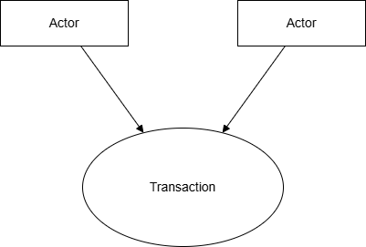
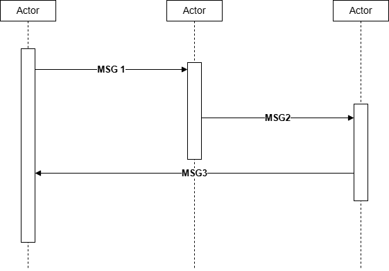

1 Preface to Volumes 2 and 3
1.1 Intended Audience
The intended audience of this document is:
- Technical staff of vendors planning to participate in the IHE initiative
- IT departments of healthcare institutions
- Experts involved in standards development
- Anyone interested in the technical aspects of integrating healthcare information systems
1.2 Related Information for the Reader
The reader of volume 2 should read or be familiar with the following documents:
- Volume 1 of the Cross-Enterprise Document Exchange group of Integration Profiles documented in the ITI Infrastructure Technical Framework
- Volume 1 of the Audit Trail and Node Authentication (ATNA) Integration Profile documented in the ITI Infrastructure Technical Framework
- HL7® Clinical Document Architecture, Release 2.0: Section 1, CDA Overview.
- C-CDA: HL7 CDA® R2 Implementation Guide: Consolidated CDA Templates for Clinical Notes, Edition 2.1 (Sept. 2022 errata), Volume 1, Section 1
1.2.1 Overview of Technical Framework Volumes 2 and 3
Section 1 further describes related resources, and organizations and conventions used within the Technical Framework.
Section 2 provides an overview of the concepts of IHE actors and transactions used in IHE to define the functional components of a distributed healthcare environment.
Section 3 defines transactions in detail, specifying the roles for each actor, the standards employed, the information exchanged, and in some cases, implementation options for the transaction.
Volume 3, Section 4 defines a set of payload bindings with transactions.
Volume 3, Section 5 defines namespaces and vocabularies.
Volume 3, Section 6 defines the content modules that may be used in transactions.
1.2.2 Conventions Used in this Volume
This document has adopted the following conventions for representing the framework concepts and specifying how the standards upon which the IHE Technical Framework is based should be applied.
1.2.2.1 The Generic IHE Transaction Model
Transaction descriptions are provided in section 3. In each transaction description, the actors, the roles they play, and the transactions between them are presented as use cases. The generic IHE transaction description includes the following components:
- Scope: a brief description of the transaction.
- Use case roles: textual definitions of the actors and their roles, with a simple diagram relating them, e.g.,:

Figure 1.2.2.1-1: Use Case Role Diagram
- Referenced Standards: the standards (stating the specific parts, chapters or sections thereof) to be used for the transaction.
- Interaction Diagram: a graphical depiction of the actors and transactions, with related processing within an actor shown as a rectangle and time progressing downward, similar to:
The interaction diagrams used in the IHE Technical Framework are modeled after those described in Grady Booch, James Rumbaugh, and Ivar Jacobson, The Unified Modeling Language User Guide, ISBN 0-201-57168-4. Simple acknowledgment messages are omitted from the diagrams for brevity.

Figure 1.2.2.1-2: Interaction Diagram
- Message definitions: descriptions of each message involved in the transaction, the events that trigger the message, its semantics, and the actions that the message triggers in the receiver.
1.3 Copyright Permissions
Health Level Seven, Inc., has granted permission to the IHE to reproduce tables from the HL7 standard. The HL7 tables in this document are copyrighted by Health Level Seven, Inc. All rights reserved. Material drawn from these documents is credited where used.
1.4 How to Contact Us
IHE International welcomes comments on this document and the IHE initiative. They can be submitted using the Web-based comment form at http://www.ihe.net/PCC_Public_Comments or by sending an email to the co-chairs and secretary of the Patient Care Coordination domain committees at pcc@ihe.net.